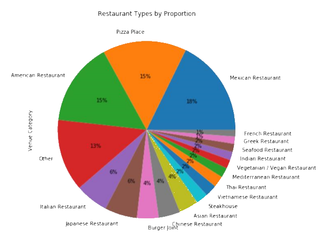

IBM Data Science Professional Certificate Capstone Project
Background
The Data Science Professional Certificate was provided by IBM through Coursera. This certificate provided platforms such as Jupyter Notebooks, Cognitive AI, and more to complete rigorous data analytics and data science assignments. These assignments were mainly former business projects of IBM while other assignments provided deep explorations on the forefront of tools used to perform data science. The last assignment for this certificate was a purely self-conceptualized data science project in which we were to find a problem or interesting set of data, explore it, analyze it, visualize it, and conclude an appropriate developed answer or discover a deeper meaning to it. These conclusions could range from financial insights to simply improvements in quality of life.
The Problem
I chose to find a mixture of both. I decided my capstone project would be to determine what the most popular type of cuisine is in Denver, Colorado per borough or neighborhood and determine which ones would be good candidates to open up a new restaurant of such cuisine.
The Structure
I decided to build this project on a Jupyter Notebook using Python as the main language to code, utilizing various Python packages to create the dataframes and perform statistical analysis and visualization.
Data Sources & Cleaning
To determine the range of the neighborhoods I would be analyzing,
I decided to retrieve a csv file containing all the official names of the recognized
neighborhoods of Denver on the city of Denver’s official website. This file would
constitute a list of 78 names to which I attributed central geographical coordinates
using Google’s API.
To determine the venues in those neighborhoods, I used FourSquare’s API to identify
every marked venue within a 1200 meter radius to the center of each neighborhood and
appended them to a dataframe. I applied various filters to remove duplicates and remove
venues that were not restaurants. After restructuring, I had over 1000 restaurants in
Denver and over 40 different types of cuisine.
Data Features
After applying the various filters mentioned above, I had two dataframes with which
I could work. One dataframe was specifically focused on the neighborhoods and their
distinguishable features (columns), that is to say the neighborhood ID, name, the
neighborhood’s center’s latitude, longitude, the number of restaurants in that neighborhood,
and the number of types of cuisines in that neighborhood. With 6 columns and 78 rows,
this dataframe was mainly used to perform exploratory data analysis to generate visualizations
and insights on distribution.
The second dataframe was the one generated from the venues found by the FourSquare API and
then filtered. This dataframe held all the data on restaurants. Its data features were the
restaurant’s name, type of cuisine, latitude, longitude, and the name, latitude, and longitude
of the neighborhood to which it belonged. With 7 columns and over 1000 rows, this dataframe
provided the raw information to be used in the first dataframe.
The Type of Cuisine to Pick
Determining which cuisine was the most popular depended on multiple factors. For one,
the distribution of restaurants varied from neighborhood to neighborhood, as one would
expect. Some boroughs had more diversified cuisine and some had more restaurants, but
significantly less diversity. The deciding factor was which cuisine had the greatest
presence, or in other words, which cuisine had the most restaurants in Denver. The calculations
showed that Mexican cuisine was the most prominent type, with 189 restaurants in Denver,
with pizza places and American restaurants in close second and third, with 163 and 162,
respectively. All cuisine types that represented less than 1% of the distribution were
to be appended to the “Other” type to simplify visualizations. As you can see below,
this pie chart represents the distribution of restaurant types in Denver as determined
by my project.

What Makes a Good Spot for a New Restaurant
From the information gathered through creating a pie chart, I decided to count how
many Mexican restaurants there were per neighborhood. This would later be used to
calculate the frequency of such restaurants among neighborhoods, but integer
values would give insight as to whether a neighborhood already has a significant number
of Mexican restaurants. I created a double horizontal bar chart displaying the number
of Mexican restaurants per neighborhood in comparison to other restaurants per
neighborhood which demonstrated quite a few things to be considered. It showed that
of all 78 neighborhoods, 12 did not contain any Mexican restaurants. Of those 12,
only 3 had more than 10 restaurants. The earlier bar chart showed the same three had
significant diversity in relation to their number of restaurants. This immediately
led me to know they would be candidate neighborhoods at the end, but I would need
to determine more from the other neighborhoods as 3 candidate neighborhoods are
insufficient. There must be a generally low distribution of already existing Mexican
restaurants in a neighborhood for the potential to place a new one to be viable.
The next step here was to use one hot encoding on the second dataframe to determine
the frequency values of each type of restaurant per neighborhood. Using assistance
from a previous lab in the course and the layout of the code as a template, I created a
dataframe to display this and then displayed a table of the top 5 frequencies of restaurant
types per neighborhood. This led to determining the most common type of restaurant per
neighborhood in descriptive terms instead of numerical values. I displayed a value_counts
table of this information. This table suggested that even though Mexican restaurants were
the most numerous around Denver, American restaurants and Pizza places outnumbered them in
commonality in neighborhoods. This suggested that distribution of American restaurants and
pizza places were denser in some neighborhoods than others and that Mexican restaurants were
more evenly spread. I appended the ‘1st Most Common Restaurant” column to the main dataframe,
and it supplied me with enough information to determine which neighborhoods would be the best
candidates.
The main dataframe to be used to determine the candidate neighborhoods would have 9
descriptive columns: Neighborhood ID, neighborhood, latitude, longitude, number of
Mexican restaurants, number of restaurants, number of categories, 1st most common
restaurant, and the frequency value of Mexican restaurants. Using these defining features,
I would apply constraints as mentioned earlier to determine the proper candidate neighborhoods.
I would base a candidate neighborhood if the number of restaurants per neighborhood is greater
than 10, if the most common restaurant type is not Mexican, and if the Mexican restaurant
frequency in the neighborhood is less than 0.125. I applied these measures and appended the
remaining dataframe to a folium map.
Results
Applying the calculations above returned 17 candidate neighborhoods. Of the 17, 10 had 20
or more restaurants in the area, suggesting they are viable in competition. All neighborhoods
displayed 8 or more restaurant categories, suggesting room for additional diversity and 12 of
the 17 neighborhoods had 2 or less Mexican restaurants. Only 3 of the neighborhoods had 0
Mexican restaurants. The 17 neighborhoods are: Auraria, Cherry Creek, Congress Park, City
Park, Highland, Rosedale, University Park, Mar Lee, Civic Center, CBD, Stapleton, Montbello,
Lowry Field, Skyland, Platt Park, Hampden, and Bear Valley. It is important to note that these
were calculated with the limitations of FourSquare’s ability to detect venues in general and
the limitations of my coding abilities. The reality may differ slightly from the values suggested.
Our analysis shows us that there are 17 neighborhoods in Denver that satisfy all statistical
conditions to be optimal places to open up a new Mexican restaurant. These decisions were made
by calculations based on a filter of 1200 meters from the center of each neighborhood that
captured 4600+ venues at first, which we slimmed down to around 1000+ restaurants. Choosing
the data features for the Venue Categories were vital to the analysis as it provided us with
the range of possible restaurants to use in this project. As we can see from the map, the
neighborhoods of focus are for the main part concentrated near the business center of Denver,
Capitol Hill. This is great news as this is the busiest area of Denver, where socio-economic
dynamics are optimal, and the wide range of diversity in the area makes it so a new restaurant
would fit right in.
Discussion
I decided not to specify addresses and pinpointing potential locations within the neighborhoods
as my capabilities are limited in those aspects and I wouldn't be able to decipher what is a
realistic potential address from what could be in the middle of a building. I decided to leave
that information for interpretation of the reader, who if interested would be keen to figure out
a desirable spot within that neighborhood.
I also chose to remove neighborhoods with less than 10 restaurants from the final dataframe
as there are many reasons for a neighborhood to have little food venues. Those could be based
on the structure of the neighborhood (if it is mainly residential, for example) or there could
be important underlying reasons for the lack of food attractions. Anyways, I felt they would not
be significant for analysis due to the many complications small numbers bring in making decisions
on opening a new business.
Conclusions
The purpose of this project was to identify which neighborhoods could be viable candidates
to open a new restaurant of a certain type. This type of restaurant would be based on popularity,
which was determined by the total number of those restaurants in Denver. The neighborhoods were
to be picked based on their lack of the most popular type of restaurant, the number of other
restaurants in the area which would suggest if or if not the neighborhood is busy enough to be
viable, and whether the neighborhood had already existing restaurants of that type or not. Fast
Food restaurants were removed from analysis since they can pretty much be placed around a city
like darts thrown randomly at a target. This information in all would aid stakeholders or
aspiring restaurant business owners in Denver to open up a restaurant with a promised audience
in a busy area, yet without a threatening amount of competition. The restaurants used for analysis
had all the information about them gathered through FourSquare and some calculations made above.
The final component of such a decision, choosing the exact place in the neighborhood to open a
restaurant, should be made entirely by the stakeholders or aspiring restaurant business owners.